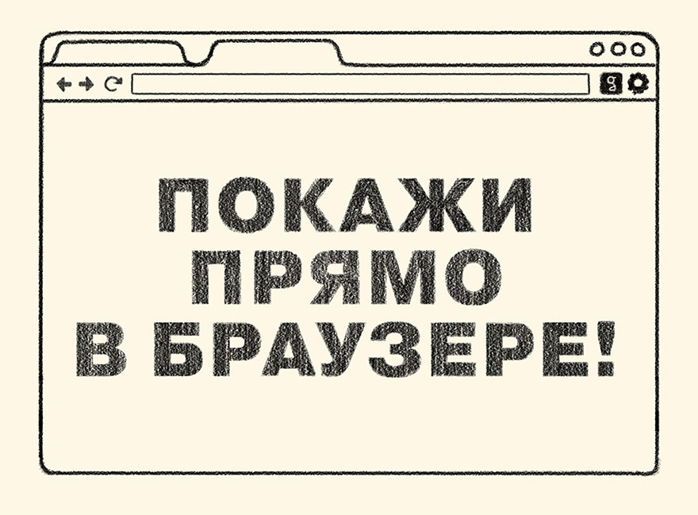
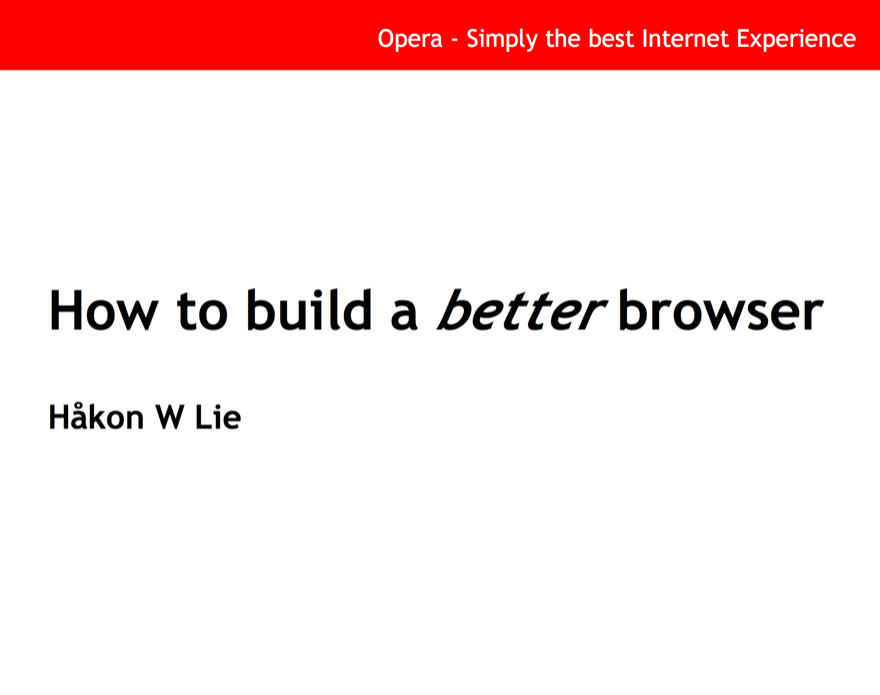
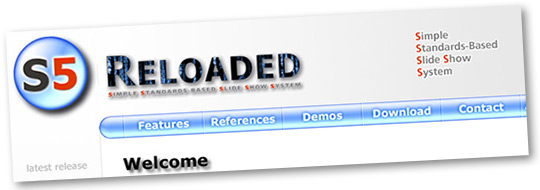
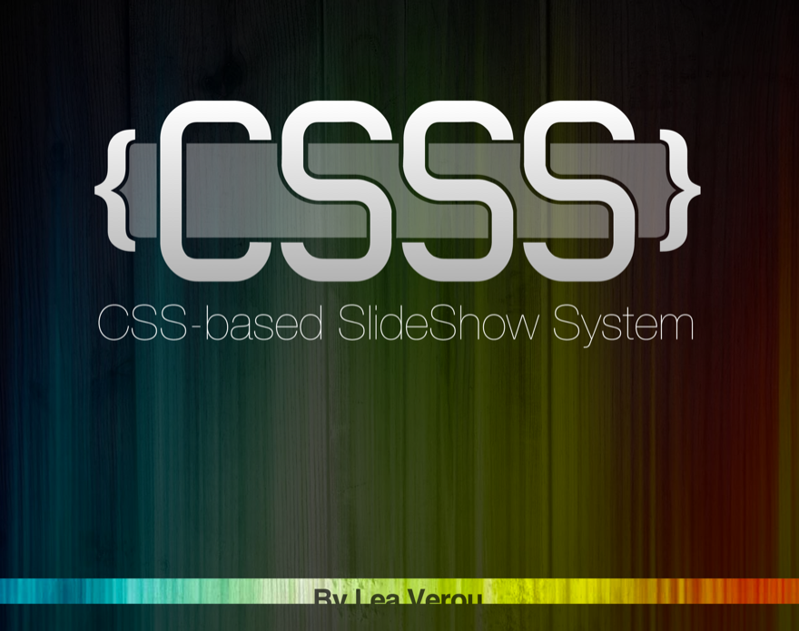
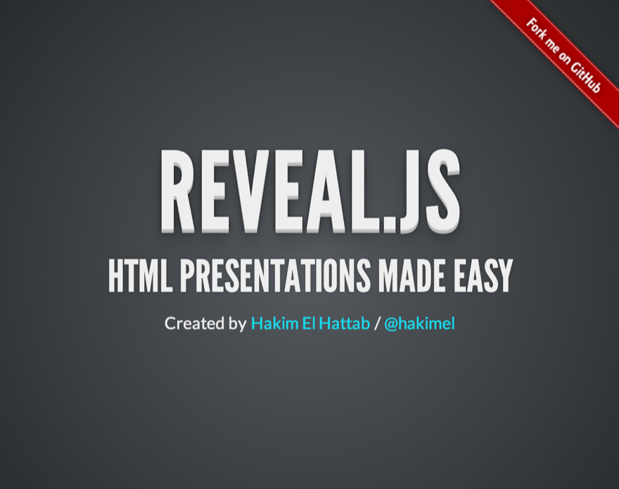
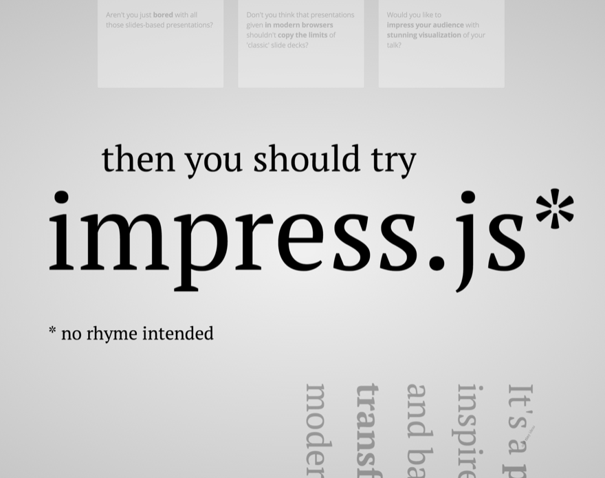
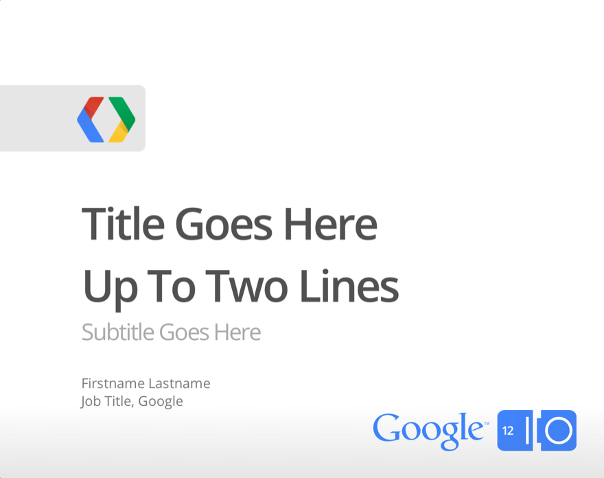
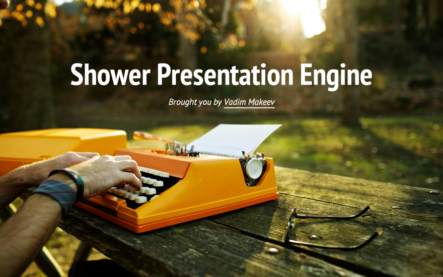
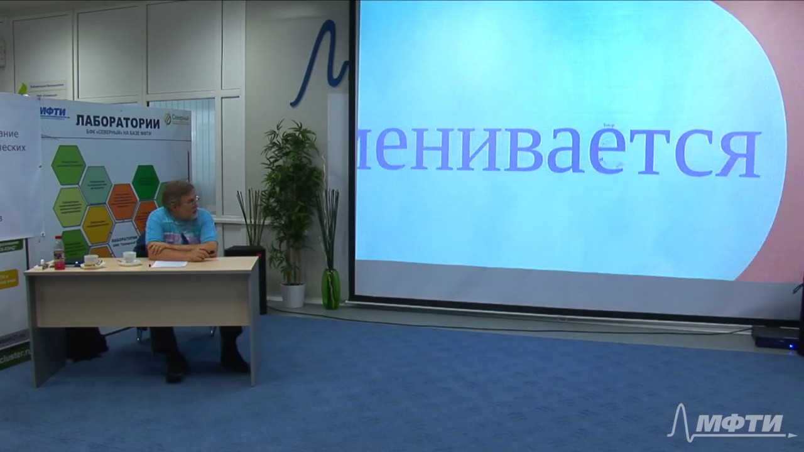

Shower Presentation Engine
Yours Truly, Famous Inc.
Как cделать презентацию с помощью веб-технологий?
Борис Беликов
© John Carey

Opera Show

5S: Simple Standards-Based Slide Show System
S5: An Introduction






Вместо заключения!
